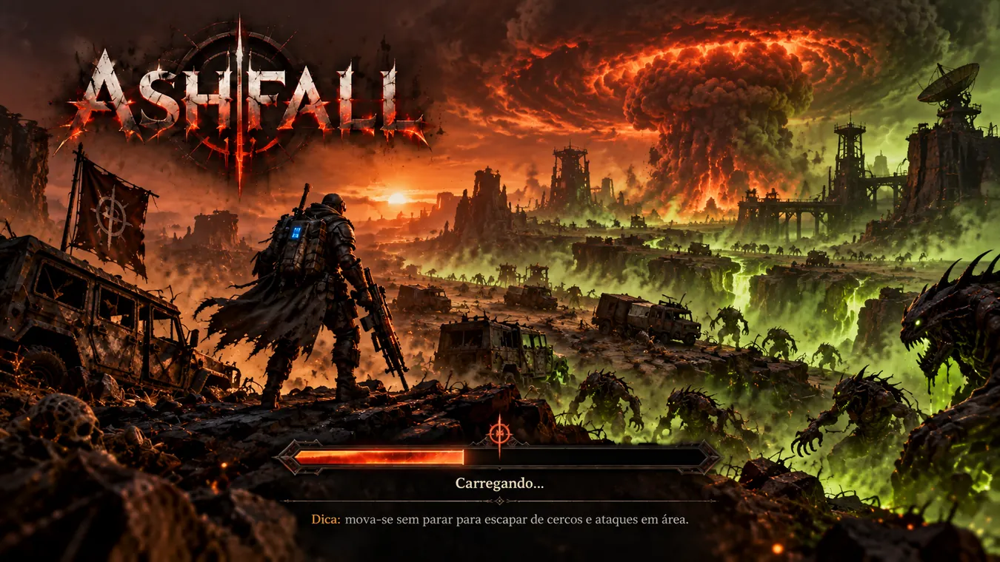

A HORDA NÃO ESPERA
Enfrente inimigos cada vez mais numerosos em batalhas intensas, onde posicionamento e sobrevivência importam.
SOBREVIVÊNCIA / ESCALADAQUANDO A HUMANIDADE ABRIU A FENDA,
A CAÇADA APENAS COMEÇOU.
Escolha sua origem. Enfrente a horda. Faça cada melhoria contar. ASHFALL já tem uma Alpha jogável nas Terras das Cinzas — e a próxima batalha é tornar cada build inesquecível.
Cinco origens jogáveis, combate manual e habilidades automáticas nas Terras das Cinzas. O foco atual é a identidade das builds e o impacto das escolhas.
Carregando o estado atual da Alpha…
Alpha em testes internos. Ainda não há download público nem data de lançamento anunciada.
A busca por uma energia impossível abriu fendas entre realidades. O Éter das Cinzas transformou cidades em ruínas, despertou máquinas ancestrais e trouxe criaturas que não pertencem a este mundo.
Agora, sobreviventes, fanáticos, mutantes e caçadores disputam os restos de uma civilização à beira do abismo.

Enfrente inimigos cada vez mais numerosos em batalhas intensas, onde posicionamento e sobrevivência importam.
SOBREVIVÊNCIA / ESCALADACombine armas manuais, habilidades automáticas e melhorias para criar builds devastadoras a cada partida.
ARMAS / SINERGIASDe um Caçador Infernal a um Exorcista da Queda, cada arquétipo traz uma identidade e possibilidades próprias.
CLASSES / REJOGABILIDADEO ciclo atual já inclui experiência, melhorias e o Guardião da Fenda com duas fases. A dificuldade e o ritmo seguem em avaliação.
Cada origem entra na arena com uma arma própria. Conheça a forma como ela enfrenta as cinzas.
Carregando as origens…
As origens estão jogáveis; suas assinaturas de classe e futuras transformações continuam em desenvolvimento.
Uma dose é só o começo. Passivas fortalecem a build; mutações mudam o que a infecção faz. Reúna os requisitos e escolha a Pandemia em Cadeia para espalhar o fim.
VEJA O QUE MUDOUO Incensário da Praga aplica infecção. Virulência permite acumular mais doses no mesmo inimigo.
Contágio Voraz espalha a infecção. Reação Instável faz infectados explodirem ao morrer.
Explosões infectam e provocam novas explosões. A horda inteira começa a apodrecer.
Os principais marcos, o que mudou e capturas reais para acompanhar a evolução do ASHFALL. Toque nas imagens para ver os detalhes.
Carregando as atualizações...
Imagens conceituais do universo ASHFALL. As artes não devem ser confundidas com capturas de gameplay.
A base já existe. Agora estamos lapidando as escolhas e ampliando o arsenal do Arauto. Veja o que faz parte da Alpha e o que ainda vem pela frente.
* Etapas planejadas, não prazos nem promessas de entrega.Combate, hordas, experiência, cinco origens e o Guardião da Fenda.
ASHFALL é um projeto independente em desenvolvimento. Volte para descobrir o que mudou nas cinzas.
VER ÚLTIMAS ATUALIZAÇÕES